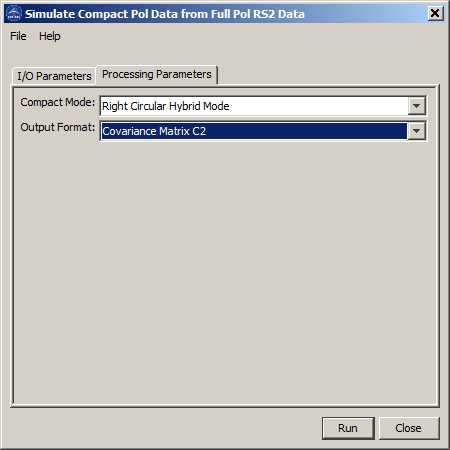

Compact Polarimetry Data Simulation Operator
This
operator simulates compact pol data from quad pol data. Primarily, this
will be applied to RADARSAT-2 Quad Pol products, but it also enable
simulating compact pol from quad pol from other missions including
ALOS, ALOS-2 and TerraSAR-X. The compact pol data of the following
compact modes are simulated:
- Right Circular Hybrid Mode
- Left Circular Hybrid Mode
Input and Output
- The
input to this operator should be a full polarimetric SAR product with 8
bands,
i.e. I and Q bands for HH, VV, HV and VH polarizations.
- The output of this operator can be the 2x1 complex scattering vector or the 2x2 complex covariance matrix.
Parameters Used
The following processing parameters are needed (see Figure 1):
- Compact Mode: the compact mode of the simulated data
- Output Format: the format of the simulated data (scattering vector or covariance matrix)

Figure 1. Dialog box for
Compact Polarimetry Data Simulation operator
Reference:
[1] S. R. Cloude, D. G. Goodenough and H. Chen, "Compact Decomposition Theory", IEEE
Geoscience and Remote Sensing Letters, Vol. 9, No. 1, Jan. 2012.
[2] T. L. Ainsworth, M. Peiss, N. Stacy, M. Nord, J. S. Lee,
"ANALYSIS OF COMPACT POLARIMETRIC SAR IMAGING MODES", Proceedings of
the 3rd International Workshop on Science and Applications of SAR
Polarimetry and Polarimetric Interferometry, by Lacoste, H.; Ouwehand,
L. ISBN:92-9291-208-7 . Noordwijk, Netherlands: European Space Agency,
2007, id.18
.